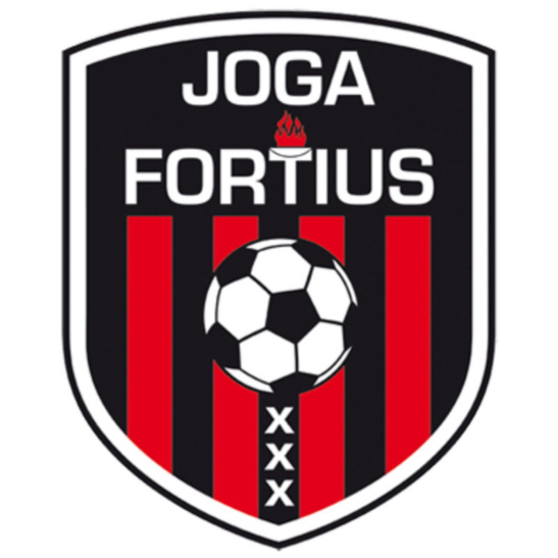
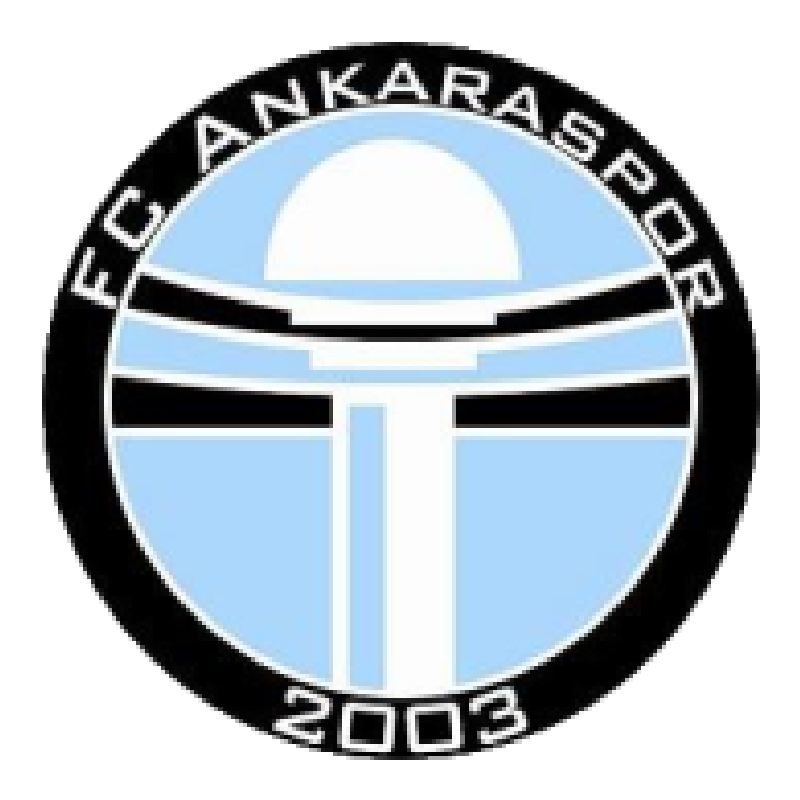
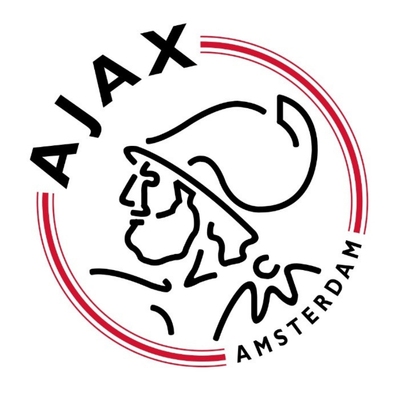
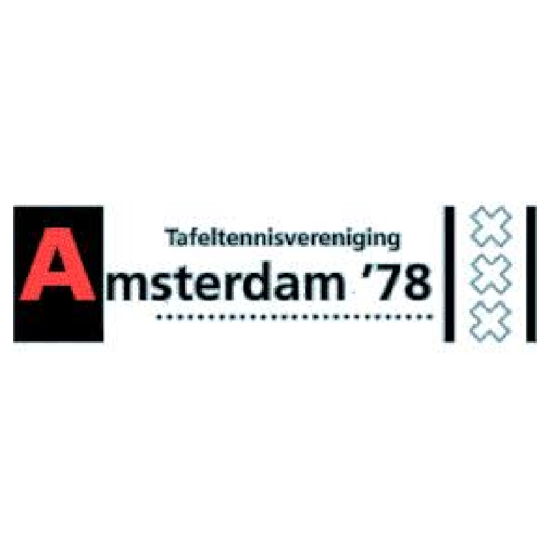
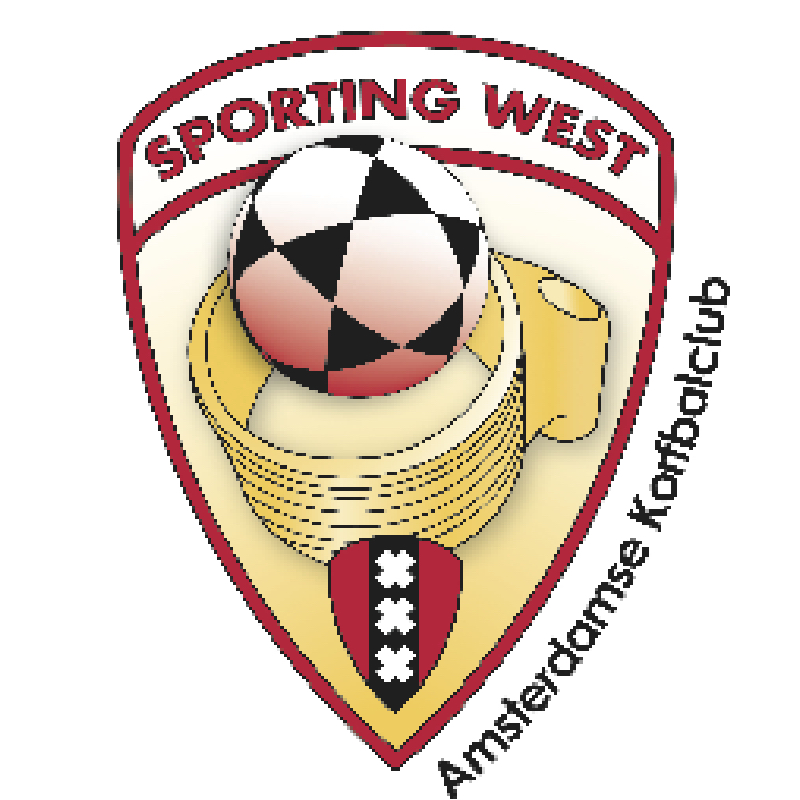
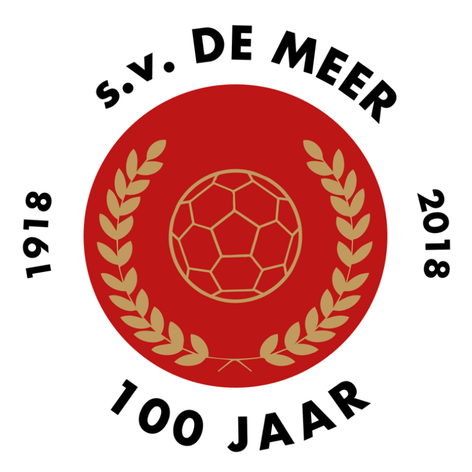
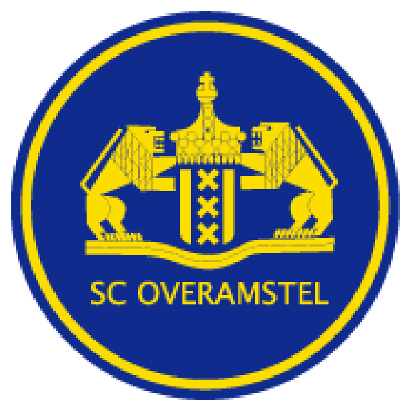

Amsterdam
Amsterdam, de hoofdstad van Nederland en bekend om de vele: authentieke grachten, gevelwoningen, historische musea, kunstwerken, parken en fietsen. Met 862.965 mensen kent Amsterdam een hoog inwonertal. De stad beschikt over uitstekend openbaar vervoer met maar liefst elf spoorwegstations en 42 kilometer aan metrolijnen verdeeld over vijf lijnen. Wie aan Amsterdam denkt, denkt ook aan studeren. Gelukkig zijn er voor de omwonende studenten voldoende hogescholen, universiteiten en kroegen om hun studententijd te vullen. Wie aan Amsterdam denkt, denkt ook aan studeren.Gelukkig zijn er voor de omwonende studenten voldoende hogescholen, universiteiten en kroegen om hun studententijd te vullen. Een andere belangrijke associatie met Amsterdam is het toerisme (+ - 19 miljoen toeristen per jaar). Dit komt mede door het aanbod aan koffieshops, de red light district en historische plekken zoals het Rijksmuseum. Gelukkig biedt Amsterdam meer dan alleen deze drie bezienswaardigheden. Zo bevinden er zich 50 parken en vele leuke winkels in de stad. Een ideale kans om te genieten van een dagje rust na een flink weekendje shoppen in de drukke maar gezellige binnenstad.


Bos en Lommer
Tot de instelling van het stadsdeel was de naam Bos en Lommer verbonden aan een wijk in Amsterdam-West. De naam Bos en Lommer is ontleend aan een in 1940 gesloopte boerenhofstede met die naam langs de Sloterdijkermeerweg, die Sloterdijk met de Sloterdijkermeerpolder, thans de Sloterplas, verbond. Nabij deze plaats bevindt zich nu het Bos en Lommerplein. Bos en Lommer kan als voorloper van de Westelijke Tuinsteden worden beschouwd. In de jaren twintig en dertig werden nabij de uit het begin van de 20e eeuw daterende Admiraal de Ruijterweg woningen in de traditionele gesloten bouwblokken gebouwd. Eind jaren dertig werd in de wijk Landlust geëxperimenteerd met strokenbouw, de eerste uiting van de open bebouwingswijze. In de jaren veertig werd hier verder aan gebouwd. Het westelijke deel kwam na de Tweede Wereldoorlog tot stand, dit deel wordt tegenwoordig de Kolenkitbuurt genoemd. De wijk was eind jaren vijftig volgebouwd. In Bos en Lommer zijn straten vernoemd naar familie van Willem de Zwijger, zeehelden, zeeslagen en historische boeken en toneelstukken. De wijk bestaat voornamelijk uit middelhoogbouw (vier etages), met hier en daar laagbouw. Hoogbouw vindt men vooral in de nieuwbouw zoals rond het Bos en Lommerplein, de torenflats nabij de metrolijn en in de Laan van Spartaan. In de nieuwe wijk Laan van Spartaan, begrensd door de Ringspoorbaan, Jan van Galenstraat, A10 en de Erasmusgracht zijn de straten vernoemd naar sporthelden uit het verleden.


Sport
jogafortius
Tekst voor boven de foto
Ajax
Amsterdam 78
Phanos
Sportclub Match
Sporting West
S.V. De Meer
S.C. OverAmstel
Zuidoost United
Jiu Jitsu is een eeuwen oude Japanse vechtkunst. Het was onderdeel van de training van de Samurai (de Japanse ridders) die op het slagveld ook zonder hun wapens moesten kunnen overleven. Later is het Jiu Jitsu meer en meer ontwikkeld tot een zelfverdedigingssysteem wat het tot vandaag de dag ook nog is. In de loop van de tijd zijn er ook andere bekende sporten ontstaan uit het Jiu Jitsu, zoals het Judo en Aikido. De technieken uit het Judo en Aikido komen dan ook voor een groot deel terug in de Jiu Jitsu-lessen zoals die op vrijdagavond in de dojo gegeven worden. Maar naast de worpen en klemmen uit het Judo en Aikido komen er ook trappen en stoten voor zoals in het karate geoefend wordt.